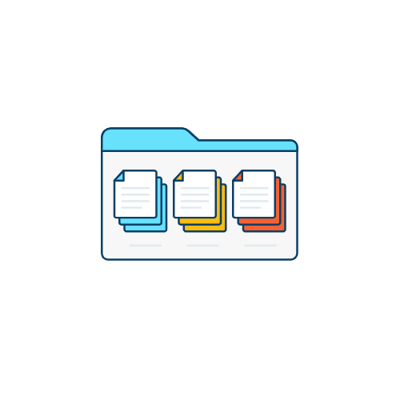

Conectores de datos nativos de Tableau
Conéctese a todos sus datos, sin importar dónde estén ubicados. Tableau ofrece conectores nativos desarrollados y optimizados para numerosas bases de datos y archivos, desde hojas de cálculo y archivos PDF hasta big data, cubos y bases de datos relacionales, ya sea en las instalaciones físicas o en la nube. Estos también incluyen los datos de aplicaciones o en la web.


